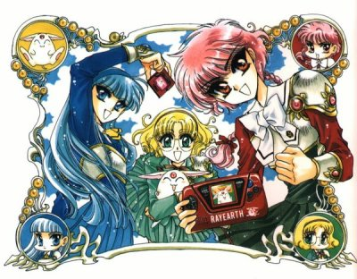

Magic Knight Rayearth

Useful Links
Anime Pocket Guide entry
Anime Web Turnpike: Magic Knight Rayearth Links
Gameboy Games
Magic Knight Rayearth
Game Gear Games
Magic Knight Rayearth
Magic Knight Rayearth 2: Making of Magic Knight
Saturn Games
Magic Knight Rayearth
SNES Games
Magic Knight Rayearth
Anime Video Game Resource Center © 1998 by
Luis A. Cruz